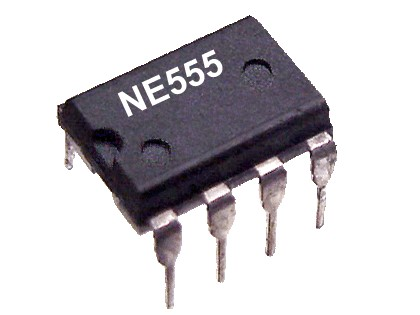
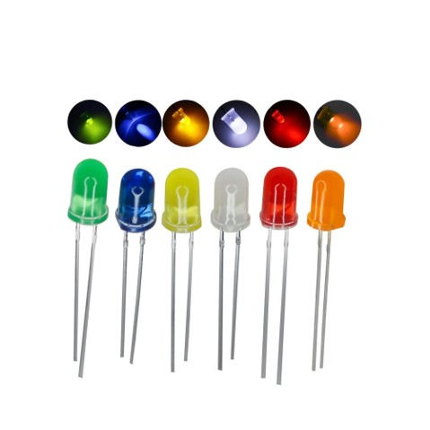
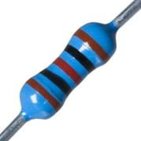
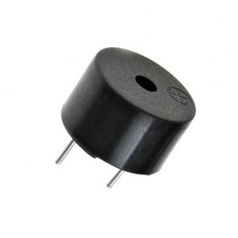
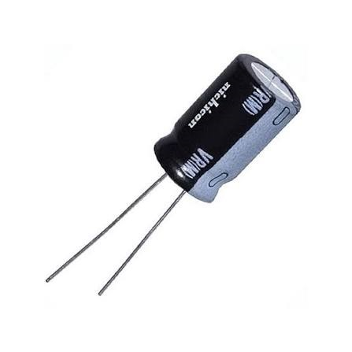

Circuito

Componentes





El NE555, o simplemente 555, es un circuito integrado que se utiliza principalmente para generar pulsos, oscilaciones y retardos de tiempo. Es un diodo semiconductor que convierte la energía eléctrica directamente en luz visible Su función principal es limitar y controlar el flujo de corriente eléctrica Es un pequeño transductor capaz de convertir la energía eléctrica en sonido. Un condensador electrolítico es un condensador polarizado cuyo ánodo o placa positiva está fabricado de un metal que forma una capa de óxido aislante mediante anodización.